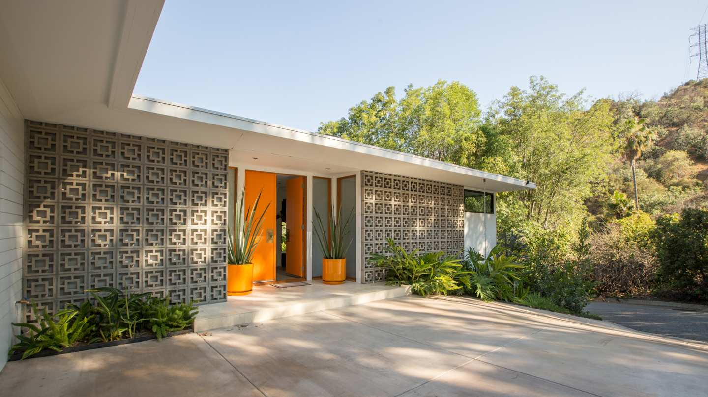

1 / 10
Art Deco
Art deco comes from a variety of influences: ancient Egypt, 1930s Hollywood and the tropical pastels of Miami Beach. Typical art deco structures have flat roofs, smooth stucco walls with rounded corners and bold exterior decorations. The style is used more often for office buildings than private homes.
2 / 10
Cape Cod
The first Cape Cod homes were built in the 1600s. They were inspired by Britain's thatched cottages, but built with steeper roofs and larger chimneys to withstand cold Northeastern winters. Windows flanking the front door, dormer windows up top and cedar shingles are also typical of the style. Most of today's Cape Cods were built after World War II; they were the first style used in modestly priced housing developments.
3 / 10
FarmHouse
The term "farmhouse" doesn't refer to style, but rather to location and function. They were originally built on rural land with an emphasis on an agrarian lifestyle. Many farmhouses were modeled after then-popular architectural styles, such as Victorian and Colonial. However, farmhouses were built for need rather than design, often featuring functional porches as a transitional space creating a much more informal and inviting exterior.
4 / 10
French Provincial
Inspired by estates of the French countryside, the provincial style came to America after World War I, bringing with it decorative appeal and romantic touches. Today's newer suburban housing developments are incorporating the French provincial style with symmetrical proportions and steep roofs.
5 / 10
Midcentury Modern
Constructed out of new ideas, mindsets and a forward-thinking style, midcentury modern architecture flourished from 1945 to the 1980s. Characterized by flat planes, large glass windows and open space, the style focused on simplistic design and seamless integration of nature. World War II brought new materials, such as steel and plywood, to the forefront of architecture and design and helped to enlighten new ways of thinking about residential living.
6 / 10
Living Room
Explore a diverse selection of carefully curated living room interior designs and decor concepts on Home&Sweet Home. We offer you living room designs that are not only adaptable and functional but also in line with the latest trends. Whether you're interested in modular TV units, wall art, or innovative living room wall designs, we provide all the inspiration you require to begin your project. Feel free to browse now and pinpoint your preferred design, allowing you to fashion a living room area that truly mirrors your unique style.
7 / 10
Master Bed Room
Home&Sweet Home offers an extensive selection of budget-friendly and fashionable bedroom designs that are sure to captivate your admiration. Our thoughtfully selected master bedroom designs encompass a diverse array of styles, color palettes, and decor concepts, all of which can be tailored to your personal preferences. Whether you lean towards a modern aesthetic or favor a more rustic ambiance, our collection provides ample inspiration for bedroom interior design. Choose from these trending designs and embark on your bedroom renovation journey with Home&Sweet Home today, crafting a space that authentically mirrors your personality and taste.
8 / 10

Kitchen
Home&Sweet Home specializes in creating sleek modular kitchen designs that seamlessly combine functionality and style. Our meticulously curated modular kitchen designs in India span a spectrum, catering to minimalistic interiors as well as intricately designed kitchen interiors. Every one of our contemporary kitchen designs can be personalized to align with your budget and the dimensions of your current space. We also offer kitchen interior designs that suit various layouts, whether it's an L-shaped kitchen, U-shaped kitchen, or an open kitchen design. Our ultimate objective is to craft a kitchen interior design that best suits your home. Explore our top kitchen designs of 2023 and embark on the journey of transforming your space today.
9 / 10
Flooring Designs
Your floors are the largest surfaces in your home, and picking the best type of flooring for your space depends on your budget, lifestyle and personal preferences. Each type of flooring has its unique benefits, and determining which flooring is best for your space, depends on each room’s interior design plan and location. Be it for aesthetic purposes or safety reasons, getting the right flooring to match your interiors is a crucial step. Browse through our extensive catalogue of handpicked, curated flooring. Pick from vinyl flooring, tiles, wood flooring to carpet flooring and granite. We've got something for every floor!
10 / 10
Wall Decoration
Discover wall design inspiration with our diverse collection of art, textures, and decor. Blank walls hold creative potential; effortlessly infuse character and style into your spaces. While simplicity can be refreshing, decorating your walls with statement art and whimsical wallpaper adds depth and intrigue. Our curated selection ensures that in just a few steps, you can transform every inch of your environment, making a striking statement in your home. From minimalist elegance to bold expressions, find the perfect design to invigorate your spaces and create an ambiance that truly reflects your unique personality and taste.